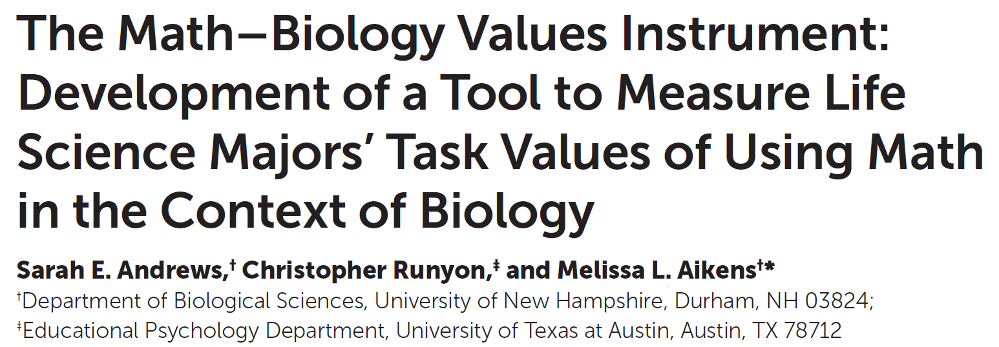

Math Biology Video Project
Derek Sollberger
- Data Analyst
- UC Merced
Dr Emily Weigel
- Course Instructor
- Georgia Tech
Math Biology Video Project
Ecology course (prereq: Intro Bio)
Fall 2018 semester
91 students (85 students in study)
24 videos
- about 10 minutes per video

Learner Profile
- mostly sophomores
- prior experience in flipped classrooms
- mostly White and Asian students
- 77 percent female
Literature



Fall 2018 Semester
Our first glance at the survey data showed no significant results between the pre and post surveys.
Discretize
We grouped students into “unchanged”, “increase”, or “decrease” groups based on their pre- and post-semester survey results for the MBVI queries—where “unchanged” was a difference of -1, 0, or 1 on the 7-point Likert scales
Math Content


Math Emotion
MBVI
Math Biology Values Instrument
Video Stats


Do some students stop watching videos across term?

Models
Multiple Views
What influences students to view students multiple times?
Call:
glm(formula = multiple_plays ~ intrigue_cat + fun_cat + appeals_cat +
interesting_cat + valuable_cat + important_cat + essential_cat +
useful_cat + work_harder_cat + worry_cat + intimidate_cat +
easy_hard + complicated_simple + confusing_clear + comfortable_uncomfortable +
satisfying_frustrating + challenging_not_challenging + pleasant_unpleasant +
chaotic_organized + GPA + pct_math + video_length + video_number,
family = "binomial", data = df)
Deviance Residuals:
Min 1Q Median 3Q Max
-2.3229 -0.9405 -0.4840 1.0090 2.2857
Coefficients: (1 not defined because of singularities)
Estimate Std. Error z value Pr(>|z|)
(Intercept) -2.764e+00 1.859e+00 -1.487 0.137076
intrigue_catincrease 1.150e-01 1.302e+00 0.088 0.929576
intrigue_catdecrease 1.370e+00 1.173e+00 1.168 0.242842
fun_catincrease -8.922e-01 5.231e-01 -1.705 0.088116 .
fun_catdecrease 2.311e+00 7.322e-01 3.156 0.001598 **
appeals_catincrease 2.869e-01 6.281e-01 0.457 0.647773
appeals_catdecrease -1.698e+00 6.447e-01 -2.634 0.008434 **
interesting_catincrease 1.707e+00 6.576e-01 2.595 0.009462 **
interesting_catdecrease -2.212e+00 4.147e-01 -5.334 9.62e-08 ***
valuable_catincrease -1.199e+00 7.577e-01 -1.582 0.113597
valuable_catdecrease -1.618e+01 5.354e+02 -0.030 0.975895
important_catincrease -8.767e-01 3.964e-01 -2.212 0.026967 *
important_catdecrease -1.594e+01 5.354e+02 -0.030 0.976256
essential_catincrease -3.513e-01 4.322e-01 -0.813 0.416374
essential_catdecrease 1.932e+01 5.354e+02 0.036 0.971210
useful_catincrease 4.869e-01 4.568e-01 1.066 0.286416
useful_catdecrease NA NA NA NA
work_harder_catincrease 2.774e-01 2.685e-01 1.033 0.301604
work_harder_catdecrease -2.725e-01 4.216e-01 -0.647 0.517945
worry_catincrease 5.338e-01 3.500e-01 1.525 0.127149
worry_catdecrease 9.584e-01 3.564e-01 2.689 0.007159 **
intimidate_catincrease -1.419e+00 4.625e-01 -3.068 0.002155 **
intimidate_catdecrease -1.469e+00 3.275e-01 -4.485 7.28e-06 ***
easy_hard3 1.374e+00 7.488e-01 1.834 0.066603 .
easy_hard4 2.940e-01 7.214e-01 0.408 0.683598
easy_hard5 1.593e+00 7.100e-01 2.243 0.024890 *
easy_hard6 -3.706e-01 8.303e-01 -0.446 0.655323
easy_hard7 -1.694e-01 1.037e+00 -0.163 0.870239
complicated_simple -6.506e-01 1.773e-01 -3.671 0.000242 ***
confusing_clear 2.877e-01 1.620e-01 1.776 0.075785 .
comfortable_uncomfortable -3.927e-01 1.298e-01 -3.026 0.002476 **
satisfying_frustrating 2.317e-01 1.159e-01 1.999 0.045608 *
challenging_not_challenging -1.322e-01 1.641e-01 -0.805 0.420689
pleasant_unpleasant 7.729e-01 1.475e-01 5.239 1.62e-07 ***
chaotic_organized 3.058e-01 9.865e-02 3.100 0.001935 **
GPA 2.159e-01 4.056e-01 0.532 0.594511
pct_math -3.338e-03 3.305e-03 -1.010 0.312373
video_length 1.076e-04 1.861e-04 0.578 0.563013
video_number -4.326e-02 1.217e-02 -3.555 0.000378 ***
---
Signif. codes: 0 '***' 0.001 '**' 0.01 '*' 0.05 '.' 0.1 ' ' 1
(Dispersion parameter for binomial family taken to be 1)
Null deviance: 1198.6 on 867 degrees of freedom
Residual deviance: 1000.0 on 830 degrees of freedom
(1089 observations deleted due to missingness)
AIC: 1076
Number of Fisher Scoring iterations: 12Viewing multiple times is encouraged by
- It is fun (decrease) to use math to understand biology
- Using math to understand biology is interesting (increase)
- I worry (decrease) about getting worse grades in a biology course that incorporates math than one that does not
- pleasant versus unpleasant
- chaotic versus organized
Viewing multiple times is discouraged by
- Using math to understand biology appeals (decrease) to me
- Using math to understand biology is interesting (decrease)
- It is important (increase) for me to be able to do math for my career in the life sciences
- Taking a biology course that incorporates math intimidates (both) me
- complicated versus simple
- comfortable versus uncomfortable
- satisfying versus frustrating
- time in semester (video number)
Viewing Time
What influences students to spend more time watching the videos?
Call:
glm(formula = as.numeric(avg_view_time_when_played) ~ intrigue_cat +
fun_cat + appeals_cat + interesting_cat + valuable_cat +
important_cat + essential_cat + useful_cat + work_harder_cat +
worry_cat + intimidate_cat + easy_hard + complicated_simple +
confusing_clear + comfortable_uncomfortable + satisfying_frustrating +
challenging_not_challenging + pleasant_unpleasant + chaotic_organized +
GPA + pct_math + video_length + video_number, family = "gaussian",
data = df)
Deviance Residuals:
Min 1Q Median 3Q Max
-853.86 -128.02 -24.41 108.91 1139.41
Coefficients: (1 not defined because of singularities)
Estimate Std. Error t value Pr(>|t|)
(Intercept) 180.5561 176.8864 1.021 0.307672
intrigue_catincrease 153.1457 116.2658 1.317 0.188134
intrigue_catdecrease 328.5588 104.4253 3.146 0.001712 **
fun_catincrease 2.3447 48.3834 0.048 0.961360
fun_catdecrease -40.4265 74.1309 -0.545 0.585667
appeals_catincrease -22.9577 56.2257 -0.408 0.683149
appeals_catdecrease 28.4891 66.2874 0.430 0.667466
interesting_catincrease 85.8513 60.3164 1.423 0.155011
interesting_catdecrease -6.5632 41.9026 -0.157 0.875575
valuable_catincrease -153.6194 72.3949 -2.122 0.034136 *
valuable_catdecrease -872.1688 246.4276 -3.539 0.000424 ***
important_catincrease -16.3917 39.5645 -0.414 0.678758
important_catdecrease -842.0904 255.4479 -3.297 0.001020 **
essential_catincrease 78.0939 41.2858 1.892 0.058900 .
essential_catdecrease 826.7246 268.3537 3.081 0.002133 **
useful_catincrease -28.3670 41.7338 -0.680 0.496876
useful_catdecrease NA NA NA NA
work_harder_catincrease -14.9730 27.3546 -0.547 0.584274
work_harder_catdecrease 36.4671 38.6517 0.943 0.345711
worry_catincrease 13.4219 37.2188 0.361 0.718474
worry_catdecrease -2.8790 35.4262 -0.081 0.935249
intimidate_catincrease -2.7321 45.7014 -0.060 0.952344
intimidate_catdecrease 33.5371 32.8474 1.021 0.307552
easy_hard3 -34.3803 74.1131 -0.464 0.642848
easy_hard4 -25.4733 71.6178 -0.356 0.722167
easy_hard5 -26.0246 69.5317 -0.374 0.708289
easy_hard6 -100.2542 82.3422 -1.218 0.223748
easy_hard7 221.9490 96.7221 2.295 0.021999 *
complicated_simple -21.7275 17.1182 -1.269 0.204705
confusing_clear 31.3572 16.0778 1.950 0.051472 .
comfortable_uncomfortable 28.3085 13.1634 2.151 0.031801 *
satisfying_frustrating -20.8471 12.0115 -1.736 0.083008 .
challenging_not_challenging -17.2412 16.4447 -1.048 0.294744
pleasant_unpleasant -0.3234 14.5043 -0.022 0.982217
chaotic_organized -19.1039 9.7751 -1.954 0.050996 .
GPA 61.4313 39.0669 1.572 0.116225
pct_math 0.1931 0.3323 0.581 0.561199
video_length 0.2106 0.0188 11.204 < 2e-16 ***
video_number 3.1522 1.2089 2.607 0.009288 **
---
Signif. codes: 0 '***' 0.001 '**' 0.01 '*' 0.05 '.' 0.1 ' ' 1
(Dispersion parameter for gaussian family taken to be 51216.36)
Null deviance: 59330647 on 867 degrees of freedom
Residual deviance: 42509579 on 830 degrees of freedom
(1089 observations deleted due to missingness)
AIC: 11915
Number of Fisher Scoring iterations: 2Viewing time is encouraged by
- Using math to understand biology intrigues (decrease) me
- comfortable versus uncomfortable
- time in semester (video number)
Viewing time is discouraged by
- Math is valuable (both) for me for my life science career
- It is important (decrease) for me to be able to do math for my career in the life sciences
Take Home Messages
Students who viewed videos multiple times and/or for longer duration were
- more pessimistic about math emotions
- worried less about their course grade
- not affected by the proportion of math content
Thank You
Derek Sollberger
- Data Analyst
- UC Merced
- dsollberger@ucmerced.edu
Dr Emily Weigel
- Course Instructor
- Georgia Tech
- emily.weigel@biosci.gatech.edu